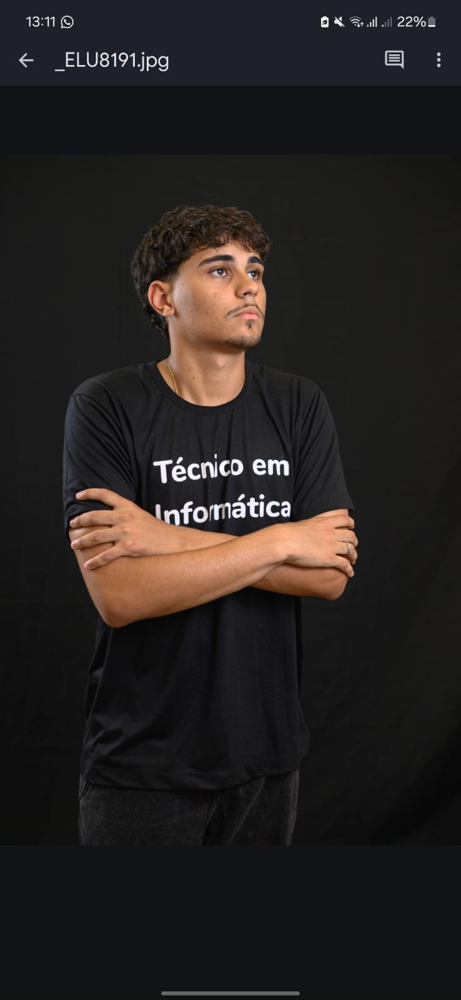
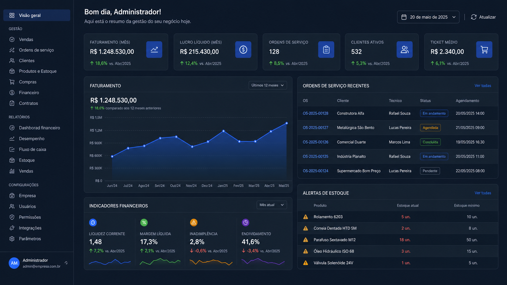
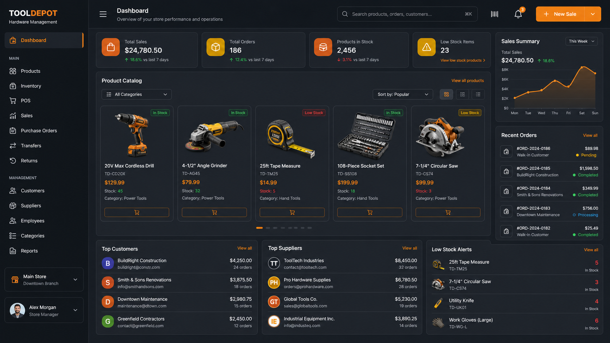

Landing pages
Uma página focada em apresentar uma oferta, campanha ou serviço e levar o visitante até o contato.
Agenda aberta para novos projetos
Oi, eu sou o Leonel. Transformo ideias em páginas bonitas, rápidas e fáceis de usar — feitas para apresentar seu trabalho e trazer novas oportunidades.

Leonel Nunes
Sabará, Minas Gerais
Como posso ajudar
Cada projeto começa com uma conversa. Eu entendo o que você precisa comunicar e construo uma presença digital clara, profissional e com a sua personalidade.
Uma página focada em apresentar uma oferta, campanha ou serviço e levar o visitante até o contato.
Sua empresa com uma presença confiável, responsiva e organizada para funcionar bem no celular e no computador.
Ferramentas web para organizar processos, cadastros e informações que hoje consomem o tempo da sua equipe.
Meu processo
Entendo seu negócio e objetivo.
Organizo conteúdo e visual.
Desenvolvo e mostro a evolução.
Publico e ensino você a usar.
Engenharia de Software
Técnico em Informática
Experiência profissional em TI
Português, inglês e espanhol
Sobre mim
Minha história com tecnologia começou no curso Técnico em Informática do IFMG. Hoje estudo Engenharia de Software na UNIBH e trabalho com TI na Dsystem Tecnologia. Foi resolvendo problemas reais que percebi algo importante: tecnologia boa é aquela que facilita a vida das pessoas.
Por isso, não quero apenas entregar código. Quero ouvir sua ideia, explicar cada decisão sem complicação e criar algo que você tenha orgulho de mostrar aos seus clientes.
Projetos em destaque
Projetos nos quais explorei sistemas de gestão, desenvolvimento web e bancos de dados.

Sistema de gestão empresarial com atendimento, ordens de serviço, estoque, compras, faturamento, financeiro, contratos e portal do cliente.

Aplicação web para gerenciar produtos, clientes, fornecedores e vendas, apoiada por um banco relacional completo.
Seu projeto pode estar aqui.
Vamos criar uma presença digital feita para o seu negócio.
Estou sempre estudando e construindo. Este espaço está reservado para o próximo desafio que vai ampliar minha experiência.
Seu próximo passo
Me conte o que você faz e onde quer chegar. A primeira conversa é sem compromisso — e sem linguagem complicada.
Pedir orçamento no WhatsApp →